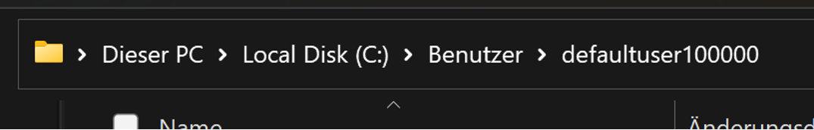

Welcome to the Linux Introduction Course for Ethical Hackers and IT-Security.
Throughout this course, we will provide you with comprehensive instruction on the fundamentals of Linux and essential commands.
The course structure involves an interactive Linux operating system on the right-hand side, allowing you to explore and experiment freely. On the left side, you will find valuable information regarding the system, commands, and tasks.
Please pay attention to the bold text when entering commands or folder names in the command line. Disregard any text that is not highlighted in bold.
Feel free to navigate through the system using the provided back and forward buttons.
Linux is an operating system, similar to Windows and macOS, although it may not enjoy the same level of widespread recognition.
As you can observe on the right-hand side, Linux shares significant similarities with its counterparts, offering features such as an internet browser, directory system, and command line interface, which will become increasingly significant as you progress.
Now, you may be wondering why one would opt for Linux instead of the more prominent Windows and macOS platforms. The answer to this question awaits you on the following page.
This is best explained by the following chain of information
It's essential to know your enemy inside out. Since most websites and servers are powered by Linux, they become prime targets for not-so-ethical hackers who also rely on Linux!
To protect ourselves and uncover vulnerabilities, we must familiarize ourselves with Linux and learn how to wield its power effectively!
Now that we understand the purpose behind our journey, let's dive into the introduction.
Linux consists of distinct components that contribute to its functionality. Vertically organized, the structure includes:
Linux today looks like other operating systems. Most computers are operated via a graphical user interface (GUI). With Linux, however, the use of the command line dominates.
Why is this so?
"GUI makes simple tasks easier, while the command line makes difficult tasks possible."
The command line offers the possibility to operate Linux completely via the keyboard. This makes a mouse obsolete.
You will find the command line icon in second place in the lower middle bar. You can click on the symbol.
Or you can simply call it up with Ctrl + Alt + t
When you have finished, click on next!
So, let's take a look at the command line.
Type in what you want and hit enter.
As you can see, it doesn't work.
Why is that?
Linux has fixed commands. These must be entered with upper/lower case-sensitivity.
Let's try again on the next page.
The echo command is used to print out a string onto the terminal.
Try typing echo + Hello World and hit enter !
Side note for the command line:
Not only is case sensitivity important, but also whitespace sensitivity. The placement of whitespace characters must be carefully observed.
For this course, the "+" sign represents one whitespace.
Forexampele this command should be typed in this way:
echo whitespace HelloWorld
Also, to execute any command, always hit enter. From this point on, this is common knowledge and won't be mentioned again with the following commands and tasks.
Type the command date and press Enter
What happened ?
If you got the current date, then you did everything right
As we aspire to a career as an Ethical Hacker, we should also fulfil the stereotypes as a hacker.
Issue the command
setterm -foreground green
There, now you look like you're in a cybercrime movie.
If the green is too tiring for your eyes, you can always change the colour by replacing green with the desired colour in the command.
Enter the command whoami
This command shows which user is currently using the system.
The previous commands were mentioned to give you a better impression of the command line.
Next, let's teach you the most important commands in Linux that you're most likely to need.
The best thing to do is to clean up our terminal first.
Just type clear and everything will look clean. You could also use Ctrl + l to clean up.
But don't worry if you want to recall already written commands, you can quickly get to them by using the upshift and downshift keys without having to type everything in again.
Try it out and print the current date again, without typing the command !
In Linux, directories play a vital role in organizing files hierarchically, while files store data or information. At the top-level is the root directory ("/"), serving as the starting point for the file system.
The root directory contains essential system files and directories. For example, the "/bin" directory holds binary executables, "/etc" stores system configuration files, and "/home" contains user home directories.
Understanding directory structure is crucial for efficient file management in Linux. In the upcoming sections, we will explore the file system, its organization, and the significance of different directories in the Linux ecosystem.
In Linux, it's important to know how to move around the system using commands. Here are three key commands for navigation:
PWD shows you your current "location" in the Linux file system. It prints the current directory you’re in.
Enter the command pwd
/ is the root, config is the directory your currently in.
/config is the directorypath, with the last directory being your current location. In this case config.
What is currently shown to you, would look in Windows like this:

Here you can switch between the directories by simply clicking on the desired directory.
In Linux it works differently. We will show you how on the next page
The cd command allows you to navigate between different directories by changing your current location within the file system.
Here's how to use it:
cd + directory => Changes to the specified directory.
cd .. => Moves back to the previous directory.
cd /directory/directory => Changes to the directory specified in the given path.
Let's practice using this command on the next page.
We have determined with the pwd command that we are in the /config directory.
Now, let's try to navigate to the / (root) directory using cd.
If you're unsure how to do this, please refer back to the previous page for instructions.
Afterwards, verify with pwd if you are in the / directory.
If only a single / is displayed, you have done everything correctly.
A small side note:
Once you are in the root directory, it will also be indicated next to your username.
Now, how do we find out what contents are present in the directory?
We do this using the ls command, the last of the 3 most important commands for navigation.
Enter the ls command in the command line.
Now you will see all the contents listed in front of you that are present in the root directory.
Okay, let's summarize the 3 commands again.
Let's practice navigating:
Let's practice navigating:
Let's practice navigating:
If you encounter difficulties with a command or want to understand its functionality better, you can utilize the command:
command --help
By using this command, you can access helpful information about the command's usage, options, and additional functionalities.
Let's practice using the help command on the next page.
Here are some keyboard shortcuts that can be helpful:
Ctrl + l: Similar to the clear command, but faster.
Tab: When entering a command, you can use the Tab key to auto-complete directory names. If you type the initial letters of a directory, it will only auto-complete the ones that match those letters. This allows you to work more efficiently.
Give it a try!
Navigate to the /home directory. Use ls to list its contents. There is a directory named President_of_UR. It can be tedious to type out the entire directory name each time.
To save time, enter cd and then press the Tab key until the President's directory is displayed. You can also try entering cd P and then pressing the Tab key to auto-complete the directory name.
Try using the help command with ls.
Navigate to the / directory and use the ls command.
Now use ls with the help command and find:
We have now learned the basics of the command line and are able to navigate through the Linux filesystem. We have also learned useful keyboard shortcuts that will hopefully make working with Linux faster and more enjoyable.
To navigate through the system, we have learned the commands pwd, ls, and cd, and have practiced using them.
Next, we will teach you additional important commands that are essential for working with Linux.
While some of these commands may not always be ethical, understanding our enemy requires us to think and act like them.
Now that we have learned the basics, let's be a little bit sneaky and steal some information.
Navigate to the /home directory. The President has created his directory there. Enter that directory. Inside, you should find a file that contains interesting information for students.
What is the name of this file? Enter the name in the text field below.
(File name: finalExam.zip)
This file contains very interesting content for us as students, so let's open it.
The default command to open files is the catcommand.
Let's give it a try. Open the file by typing cat + filename
What is displayed?
It doesn't seem to make much sense and doesn't look like exam questions.
That's because we have a zip file here. In order to open it with cat, we first need to unzip the file.
The very important test questions are stored in a zip file.
Files in this format can be opened with the unzip command.
Enter the command unzip + filename
or unzip filename.zip -d /path/to/destination
example unzip filename.zip -d /home/hacker
in our case, it is necessary to use unzip filename.zip -d /path/to/destination so that you can practice navigation and you need it afterwards to continue the exercise
Hm ok, as you can see the file is encrypted and we need a password to open it.
Press Ctrl + C to finish the command and let's check again in the president's directory if he has stored his passwords somewhere.
What is the name of this file? Enter the name in the text field below.
Let's take a look in the President's directory to see if there's a secret directory or file.
When you use the ls command, only the finalsExam.zip file is displayed.
Do you remember the ls --help exercise?
Enter the ls --help command again and see if there is a combination that displays ALL directories.
The command we're looking for is ls -a. Now you should see some files, some dots, and a .Secret directory listed.
Open it, paying attention to the correct directory input. (Hint: don’t forget the dot)
Once you're inside the directory, use ls to view its contents again.
Now, you should find a file where the President has hidden his secret information.
What is its name? Enter it in the text field below.
Text field: secretInformation
Now we can effectively use the cat command.
Type cat + filename display the contents of the file.
Search for the password for the finalsExams file.
What is the password? Enter the password in the text field below.
Now we have the password to open the file finalExams.zip.
Go to the corresponding directory and open the file with the learned unzip command and enter the password.
Now everything should work, right?
Nevertheless, the error message "permission denied"appears.
What is the reason for this?
It appears that we have encountered the "permission denied" error.
To resolve this issue, we can utilize the mighty superhero of Linux commands: sudo
sudo stands for Superuser Do , and it grants temporary administrative privileges, allowing you to perform actions typically reserved for the root user.
When faced with the "permission denied" error, simply prepend your original command with sudo to elevate your privileges and execute the command successfully.
Now that we have all the necessary commands and information, it's time to crack the President's final exam.
So, let's get to it. Combine your newly acquired knowledge with the obtained password.
If you encounter any difficulties along the way, feel free to refer back to the relevant slides.
After extracting the finalExams.zip file, the entire directory structure was recreated within the President's directory.
This includes a home directory. By navigating through this path, you can find the unzipped file, which can be opened using the cat command.
Additionally, there is a more efficient way to locate files than manual searching.
The find command is specifically designed for this purpose. It allows you to search for files and directories based on various criteria such as name, size, type, and modification time. We will explain how to use this command on the next page.
The find command works as follows:
find + directory + -name + filename
The find command works as follows: find + directory + -name + filename
Having successfully accessed the finalExam file, we now need to store it securely.
To ensure proper organization, it is recommended to create a dedicated directory. You can do this using the following command:
mkdir + directoryName
Navigate to the /home directory and create a new directory using your last name.
Don’t forget to use sudo !!
Now that we have successfully created our own directory, let's move the unzipped final exam file there.
We can do this using the mv command, which is used as follows:
mv + filename + directory
Don't forget to include sudo at the beginning of the command to ensure necessary privileges.
You can specify the path of the directory where you want to move the file.
So, in our case, provide the path to your created directory.
Now we face the problem that when the President logs in, he will see that the finalExams.zip file has been unzipped.
So let's cover our tracks by deleting the created directory during the unzipping process. You can do this using the following commands:
rm + filename => removes files
rmdir + directoryname => removes directories
Don't forget to use sudo!
Go to the created directory, delete the finalExams file first, and then remove the subdirectories..
If you've done everything correctly, the President's directory should appear untouched.
You have successfully completed the introductory course. You have learned the essential commands and can now navigate through the system with confidence. Additionally, you have gained access to some unauthorized information. Maybe that wasn’t so ethical...
But as they say, to defeat your enemy, you must know them.
One last command: Type the history command.
Now you can see all the commands that you learned today and what you accomplished !
If you're still interested in learning a few more commands, feel free to continue. Otherwise, you can now exit the course.
If you haven't had enough of Linux yet, let's teach you a few more commands.
Go to the next page.
Let's go back to the secret information file. Previously, you had to search for the password and go through each line individually until you found it.
With the sort command, you can easily sort the file. The command works as follows:
sort + NameOfFile
Try it with the secretInformation file. As you can see, the sort command also fulfills the function of the cat command.
Now, searching for the password should be much faster and easier.
But there's an even faster way.
With the grep command, you can search for specific words.
grep + "searchtext" + file
Search for the keyword ”Password" in the secretInformation file.
Now, you will only be shown the passwords in the file.